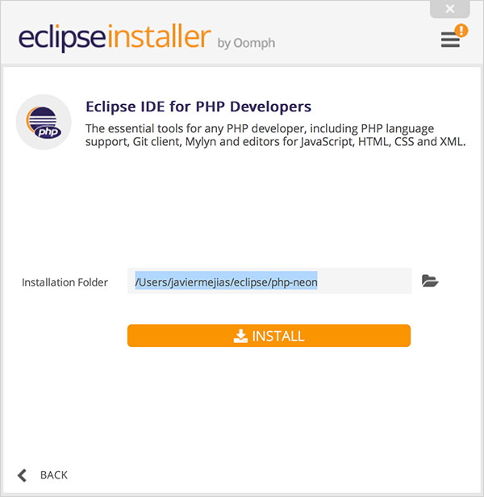
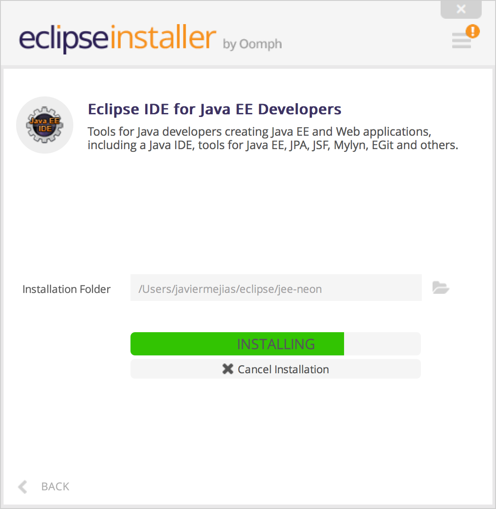
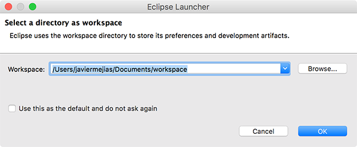
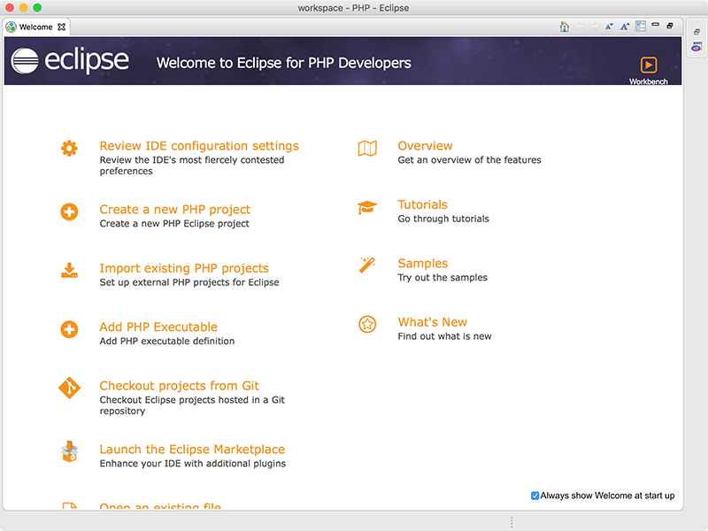

2.2.1.- Instalación y utilización de Eclipse.
Una vez hayamos descargado el entorno de desarrollo que mejor se adapte a nuestras necesidades, lo descargamos y procedemos a su instalación, la cual dependerá del sistema operativo que utilicemos será de una forma u otra. Si seleccionamos la opción Eclipse Neon genérica, al comenzar el proceso de instalación nos preguntará el lenguaje de programación con el que vamos a utilizar eclipse. De esta forma podemos instalar el IDE con la configuración que mejor se adapte a nuestras necesidades. Por otra parte podíamos habernos descargado la opción que más nos interesa para nuestro proyecto software.

Instalación en Microsoft Windows
Para llevar a cabo la instalación en Microsoft Windows, basta con descargarnos el paquete que queremos desde la página de descargas. Se nos descargará una carpeta comprimida en zip que bastará con descomprimirla y ejecutar el ejecutable eclipse.exe
De esta forma podremos ejecutar eclipse en Microsoft Windows.


Instalación en MacOs
Los usuarios del sistema operativo de Apple está acostumbrados a sencillos procesos de instalación. Basta con descargar la versión que queremos del entornos de desarrollo, hacer doble clic en el paquete descargado y comenzará un sencillo proceso de instalación, en la que el usuario tendrá que aceptar la licencia de utilización de dicho IDE, así como seleccionar la carpeta en la que quiere que se guarden sus proyectos por defecto. De una forma sencilla y rápida quedará el IDE instalado en nuestra computadora.
Comenzamos la instalación de la versión Eclipse Neon genérica y elegimos la opción para PHP.



Si la opción elegida hubiera sido otra, por ejemplo Eclipse para Java, el proceso de instalación hubiera sido el mismo, mostrando las distintas pantallas del proceso de instalación adaptadas al IDE elegido.

Recordar también que si desde la página de descarga hubiéramos elegido la configuración de eclipse acorde a nuestras necesidades, por ejemplo Eclipse para PHP o para C++, en el proceso de instalación del IDE genérico, no nos hubiera preguntado que configuración de eclipse queremos.
Instalación en GNU/Linux
sudo apt-get install eclipse
Una vez lo tengamos instalado, podremos ejecutarlo escribiendo en el terminal "eclipse".

Recuerda que los distintos IDE del proyecto eclipse son proyectos código abierto y gratuitos, los cuales pueden descargarse desde la página oficial del proyecto. La página web del proyecto eclipse es https://www.eclipse.org/ y en ella encontraremos todos los posibles entornos de desarrollo soportados por la comunidad Eclipse. Recomendamos realizar las descargas siempre desde las páginas oficiales del proyecto, de esta forma evitaremos descargarnos software de dudosa procedencia, lo cual siempre puede ser un riesgo para la integridad y seguridad de nuestro sistema.
Una vez hemos instalado el entorno de desarrollo ya podemos trabajar con el. Cada vez que lo iniciemos nos preguntará por el directorio donde queremos guardar los proyectos que vayamos desarrollando. Podemos marcar la opción para que por defecto se abra siempre el mismo directorio y no nos pregunte cada vez que iniciemos eclipse.



Si hubiéramos instalado otra versión de Eclipse, como por ejemplo la versión para desarrollar aplicaciones en Java, el proceso sería el mismo aunque el aspecto de las ventanas sería diferente, aunque bastante similar.
Una vez hemos arrancado Eclipse, podremos trabajar en los proyectos que tengamos o crear uno nuevo accediendo a través del menú File.